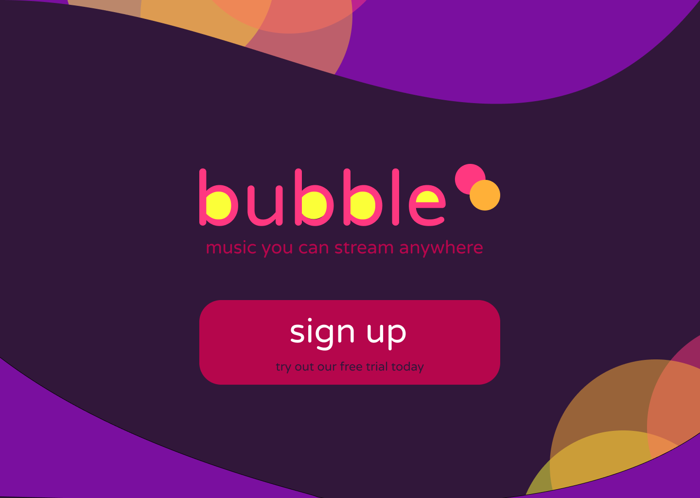
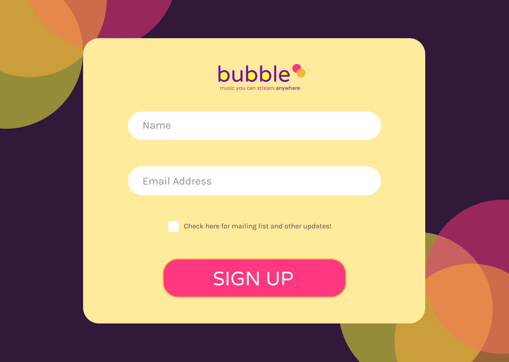
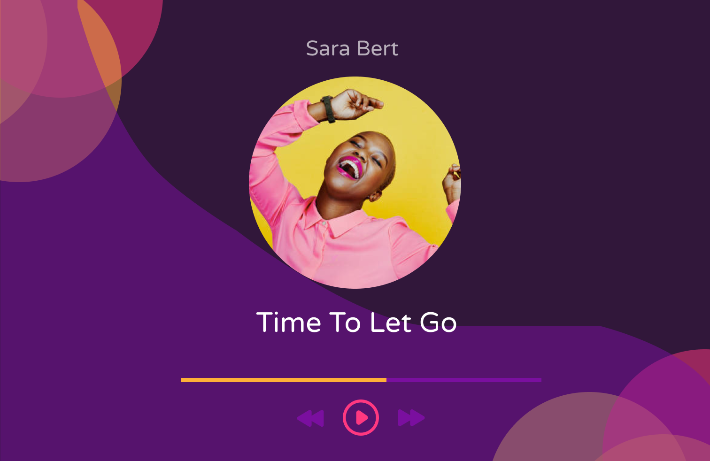

Bubble, Music Player
(2023)
Created mockups of a music streaming platform for the 100 Day UI Design Challenge.
Once again, I wanted to create a fun sort of atmosphere for this site, so I
incorporated bright yellow and purple, using dark purple to contrast them. At
some points, it was clear that these colors could be overwhelming, so I diminished
this effort by changing the opacity.
Tool: Figma